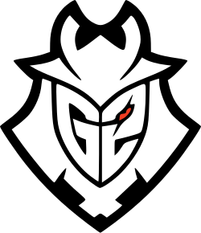
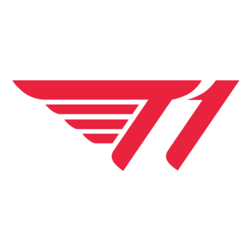
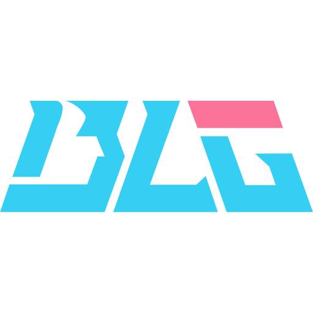
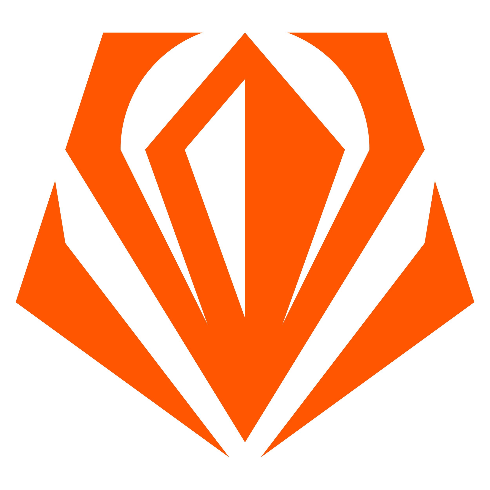

O Temacie
League of Legends (LoL) to wieloosobowa gra komputerowa typu MOBA
Stworzona i wydana przez Riot Games w 2009 roku.
W League of Legends gracze rywalizują w drużynach, starając się zniszczyć bazę przeciwnika, jednocześnie broniąc swojej własnej. Każdy gracz wybiera unikalnego bohatera z różnymi umiejętnościami i stylami gry.

Historia
W poniższej tabeli znajdować się będą najważniejsze wydarzenia w historii League of Legends:
| Data wydarzenia | Nazwa wydarzenia | Wpływ na gre |
|---|---|---|
| 27 października 2009 roku | Oficjalna premiera gry | Początek jednej z największych gier MOBA |
| Od 18 do 20 czerwca 2011 roku | Pierwsze Mistrzostwa Świata | Początek sceny E-sportowej w LoL |
| 9 listopada 2014 | Nowa wersja mapy Summoners Rift | Największa aktualizacja wizualna w historii LoL |
| 3 maja 2017 | Koniec wsparcia dla Legacy Client | Koniec pewnej ery starego klienta LoL |
E-Sport
Najbardziej rozpoznawalne drużyny E-sportowe w historii League of Legends i ich regiony z których pochodzą:
- G2 Esports (EMEA)
- T1 (KR)
 Fnatic (EMEA)
Fnatic (EMEA)- Bilibili Gaming (CN)
 Gen.G (KR)
Gen.G (KR)
Największe turnieje E-sportowe League of Legends ułożone w kolejności od najwcześniejszych w roku do najpóźniejszych:
- First Stand skr. FS (Początek marca, wygrana drużyna zapewnia sobie miejsce w MSI omijając faze PLAY-IN)
- Mid-Season Invitational skr. MSI (Od końca czerwca do początku lipca, wygrana drużyna zapewnia sobie miejsce na Worldsach)
- World Championship skr. Worlds (Od początku października do połowy listopada, wygrana drużyna zostaje mistrzem świata w danym roku)